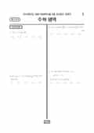

문제지

2024학년도 6월 모의평가 · 2023년 6월 시행
2024학년도 6모 수학 미적분 1등급컷은 원점수 80점(추정), 표준점수 최고점은 151점입니다.
원점수 1등급컷은 공식 발표값이 아니라 EBSi·입시기관 값입니다. 등급별 값은 등급컷 표, 출처 구분은 데이터 원칙에 있습니다.

시험지를 먼저 풀어 보세요. 등급컷·표준점수·난이도는 흐리게 가려 뒀어요.
| 등급 | 원점수 | 표준점수 | 백분위 | 누적 |
|---|---|---|---|---|
| 1 | 80 | 134 | 95 | 5.34% |
| 2 | 72 | 127 | 89 | 11.66% |
| 3 | 61 | 118 | 78 | 23.29% |
| 4 | 46 | 106 | 60 | 40.68% |
| 5 | 29 | 92 | 40 | 60.77% |
| 6 | 14 | 80 | 22 | 78.49% |
| 7 | 8 | 75 | 11 | 90.27% |
| 8 | 3 | 71 | 4 | 96.3% |
등급별 컷 · 입시기관 3곳 원점수 추정 종합(이투스·종로학원·대성마이맥) · 공통+선택 점수 조합에 따라 다를 수 있음 · 만점 100점
정답 변경 없음
이의신청 14문항
시험 전체 관련 보도 4건은 2024학년도 6월 모의평가 회차 페이지에 모아 두었어요.
수학 영역 전체 응시자 기준입니다. 한국교육과정평가원이 교육부 보도자료로 공개한 표준점수 도수분포로 계산했습니다.
EBSi 응답자 기준으로 가장 많이 틀린 문항은 22번(4점, 주관식)이고, 오답률은 97.1%입니다. 상위 15문항 중 3문항은 정답보다 한 오답을 고른 사람이 더 많았습니다(13번: 정답 ① 19.7%, ④ 30.5%). 오답률 50%를 넘은 문항은 12개입니다.
| 순위 | 문항 | 배점 | 오답률 | 정답 | 많이 고른 오답 |
|---|---|---|---|---|---|
| 1 | 22번 | 4점 | 97.1% | 380 | 주관식 |
| 2 | 30번 | 4점 | 94.1% | 24 | 주관식 |
| 3 | 21번 | 4점 | 90% | 110 | 주관식 |
| 4 | 29번 | 4점 | 87.9% | 5 | 주관식 |
| 5 | 20번 | 4점 | 87.9% | 39 | 주관식 |
| 6 | 13번 | 4점 | 80.3% | ① | ④ 30.5% |
| 7 | 15번 | 4점 | 80% | ② | ④ 26.6% |
| 8 | 28번 | 4점 | 79.9% | ② | ③ 28.2% |
| 9 | 12번 | 4점 | 63.9% | ⑤ | ④ 23.5% |
| 10 | 19번 | 3점 | 60.1% | 8 | 주관식 |
| 11 | 9번 | 4점 | 60% | ① | ④ 22.7% |
| 12 | 14번 | 4점 | 56.7% | ③ | ④ 24.8% |
| 13 | 27번 | 3점 | 47.7% | ③ | ④ 20.8% |
| 14 | 11번 | 4점 | 46.8% | ③ | ④ 16.5% |
| 15 | 10번 | 4점 | 44.7% | ② | ③ 14.9% |
EBSi 가채점 응답자 기준 · 전 문항 중 오답률 상위 15문항
출처: EBSi 역대 등급컷·오답률 공개 화면. 가채점에 참여한 EBSi 이용자 응답이라 전체 응시자 정답률과는 다를 수 있습니다.
발행 기관: 한국교육과정평가원(KICE). 파일 위치: 이 사이트가 보관한 사본. 저작권은 발행 기관에 있습니다. 원본과 다르거나 게시 중단이 필요하면 연락처로 알려 주세요. 등급컷 출처 구분은 데이터 원칙에서 설명합니다.
막대 색은 역대 대비 난이도 · 진한 막대가 이 시험 · 막대를 누르면 그 회차로 이동